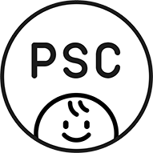
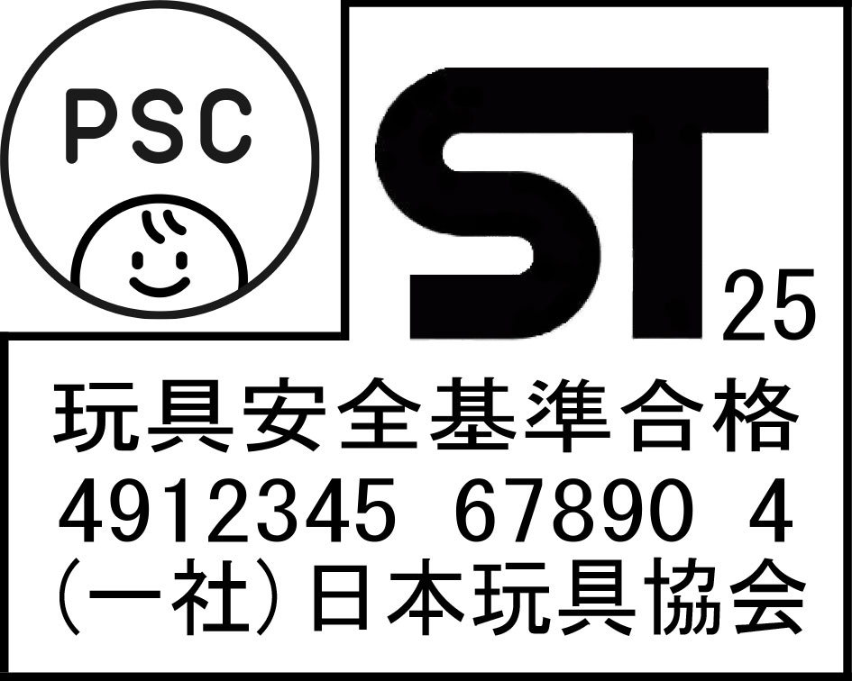

|
改正「消費生活用製品安全法」の施行に向けて(2025.4.1)
(経済産業省の公表資料を基に、日本玩具協会にてまとめたものです。）
|
| 1． |
子供用製品の安全向上を目的とする改正「消費用製品安全法」（消安法）により、「3才未満向けの玩具」について、物理的安全性・可燃安全性に係る法規制（強制規格）が導入された。 |
| 2． |
改正消安法の政省令・通達の公表 |
|
|
令和6年6月26日．子供用製品の安全向上を目的とする改正「消費用製品安全法」（消安法）が官報公布された。同法により「子供用特定製品」の制度が設けられた。 |
|
令和6年12月13日．「施行令」（政令）、「施行日を定める政令」公布
|
| |
乳幼児用玩具に係る下記事項が示された。（資料1参照）
「技術基準」（資料1の１．参照）
「使用に適した年齢に関する基準」（資料1の２．参照）
「注意を促す文言」（資料1の９．１０．参照）
届出事項（型式区分（48通り）、工場届出不要の要件）（資料1の５．６．参照）
「子供PSCマーク」の図柄（資料1の１１．参照）
|
|
令和7年2月10日 技術基準等の「経産省解釈」が公表された。（資料1の１．参照）
|
|
運用解釈 ２検査の方式等（１）の別表の１３乳幼児用玩具の解釈に、技術基準適合の「参考となる規格」として、ISO8124、EN71、ASTM F963が示された。
それ以外にも、十分 な技術的根拠があれば技術基準に適合していると判断し得るものであるとされている。
●経産省から、最新版ISO8124に準拠している「ST基準2025」が上記に該当する旨の確認を受けた(令和7年3月31日法令適用事前確認手続)ことから、「実際に使われる規格」（実働規格）として活用できる。
|
|
|
|
|
|
|
| ３． |
重要なポイント |
| (1)． |
事業届出は、令和7年9月25日より行うことができる。
事業届出後は、施行日（令和7年12月25日）前であっても、技術基準等の要件を満たす乳幼児用玩具は「子供PSCマーク」を付して販売することができる。
|
| (2)． |
子供PSCマーク、子供PSCマークと並んだSTマークのデザイン |
|
|  |
|
 |
子供PSCマーク |
|
子供PSCマークと並んだSTマークのデザイン |
|
| (3)． |
「届出事業者名、子供PSCマーク、注意の文言の表示の方法」として、製品本体又は容器包装（包装）に表示すれば良い。（資料1の１０．参照）
|
|
|
| 4． |
届出事業者の義務項目 |
|
|
| (1)． |
事業届出（届出事項：事業者名等、型式区分、工場名等、損害賠償措置） |
| (2)． |
技術基準適合（第11条第１項）（届出事業者名を表示する義務を含む。） |
| (3)． |
検査記録の作成・保存（第11条第2項） |
| (4)． |
使用年齢基準適合（第12条の2第1項） |
| (5)． |
年齢・その他の使用に関する注意の文言の表示（第12条の2第2項） |
| (6)． |
マーク表示（特定製品（第13条第1項）＋ 子供用特定製品（第13条第１項及び第3項）） |
| (7)． |
「損害賠償保険」手当（第6条第5号） |
| (8)． |
立入検査等への対応 |
| 5． |
今後の予定 |
|
令和7年9月25日．「事業届出」開始 |
|
令和7年12月25日．「乳幼児用玩具」規制開始 |